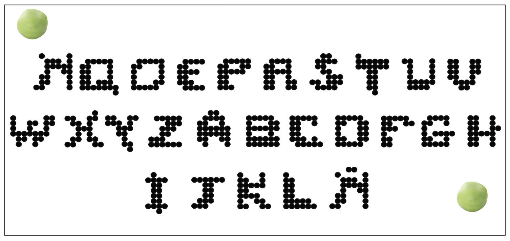

Dentro de las leguminosas de grano cultivadas en Ecuador, el cultivo de arveja ocupa el tercer lugar en cuanto a superficie sembrada y nivel de producción, después del fréjol y el haba. Se cultiva principalmente en las provincias de Tungurahua, Bolívar, Imbabura, Chimborazo, Carchi, Loja y Cotopaxi.
El nombre de la typeface es: Pisum Allwirha, Pisum por su nombre científico y Allwirha por arveja en quechua.

Inspirada en los granos de la sierra ecuatoriana, a 2800m sobre el nivel del mar las alverjas son sembradas.
Typeface:
Miscelánea, no pertenece a ninguna familia tipográfica.
Diseñada para:
Branding, logos.
Característica especial:
Jugar con sus formas y crear figuras y texturas.